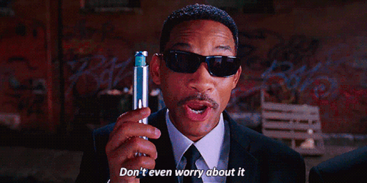

Stuff everything into the LLM's context window: include the full conversation history, all relevant facts, all prior outputs, but this breaks in production for three compounding reasons.

Context windows are finite. Even large windows (128K tokens) fill up quickly in long-running conversations or pipelines with verbose intermediate outputs. Once full, you must truncate, and truncation decisions are where information silently disappears.
Context windows are expensive. Sending 50,000 tokens of history on every turn costs real money and adds latency. In a high-throughput pipeline this compounds quickly.
Not all memory has the same scope. A user's language preference should persist across sessions and even across different agents. The intermediate output of a research step should live only for the duration of the current run. The number of times a user has invoked a feature might need to be shared across all users of an app.